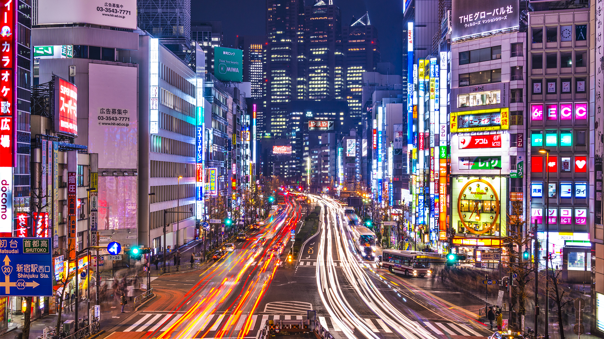

TOKYO
Tokio es la ciudad más grande del mundo, una vasta área metropolitana que alberga a más de 37 millones de personas. Un lugar donde conviven la modernidad más vanguardista y la más arraigada tradición.
La capital de Japón, posee una población de más de 13 millones de habitantes (37 millones contando el área metropolitana) en una superficie total de 2187 km2. Está densamente poblada (6300,89 hab/km2) y es la principal ciudad del mundo en cuanto a PIB (Producto Interno Bruto).
